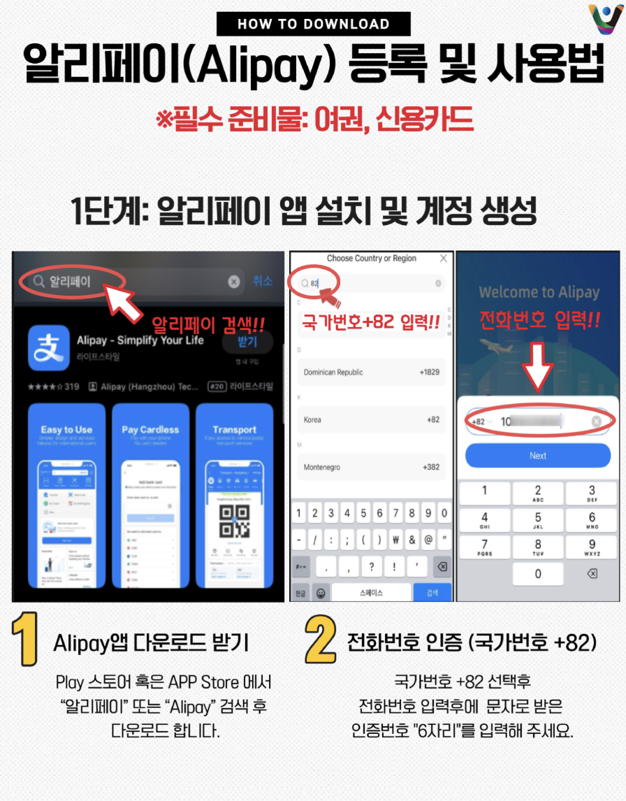
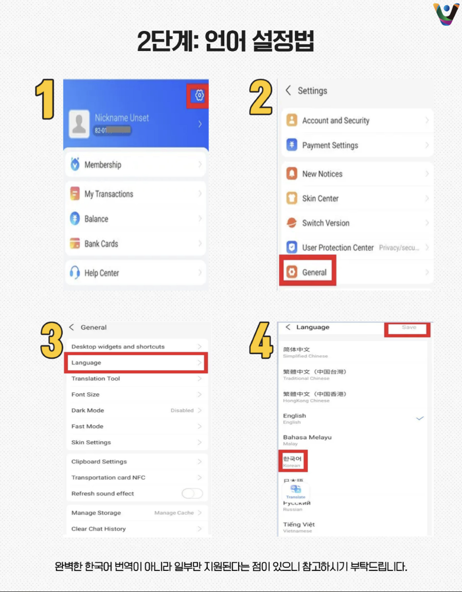
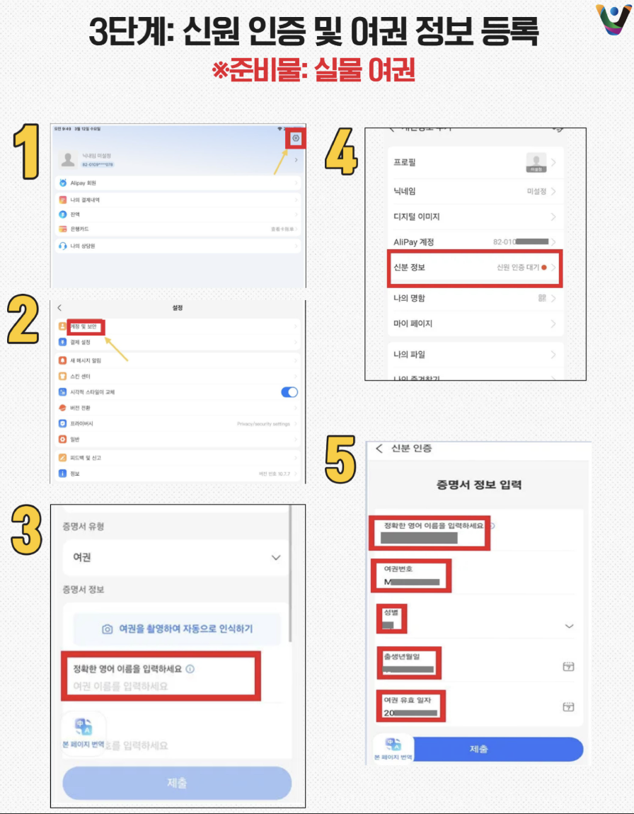
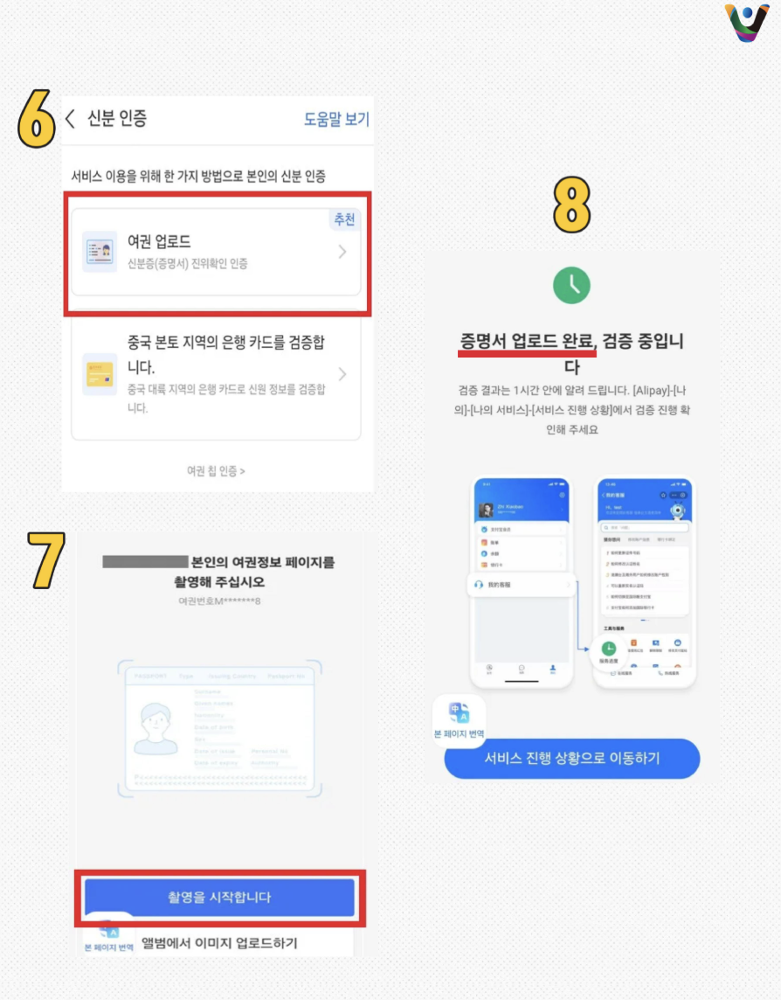
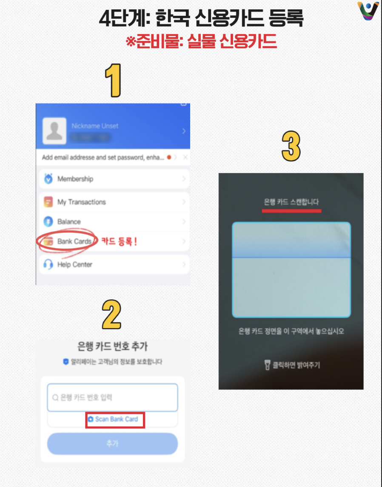
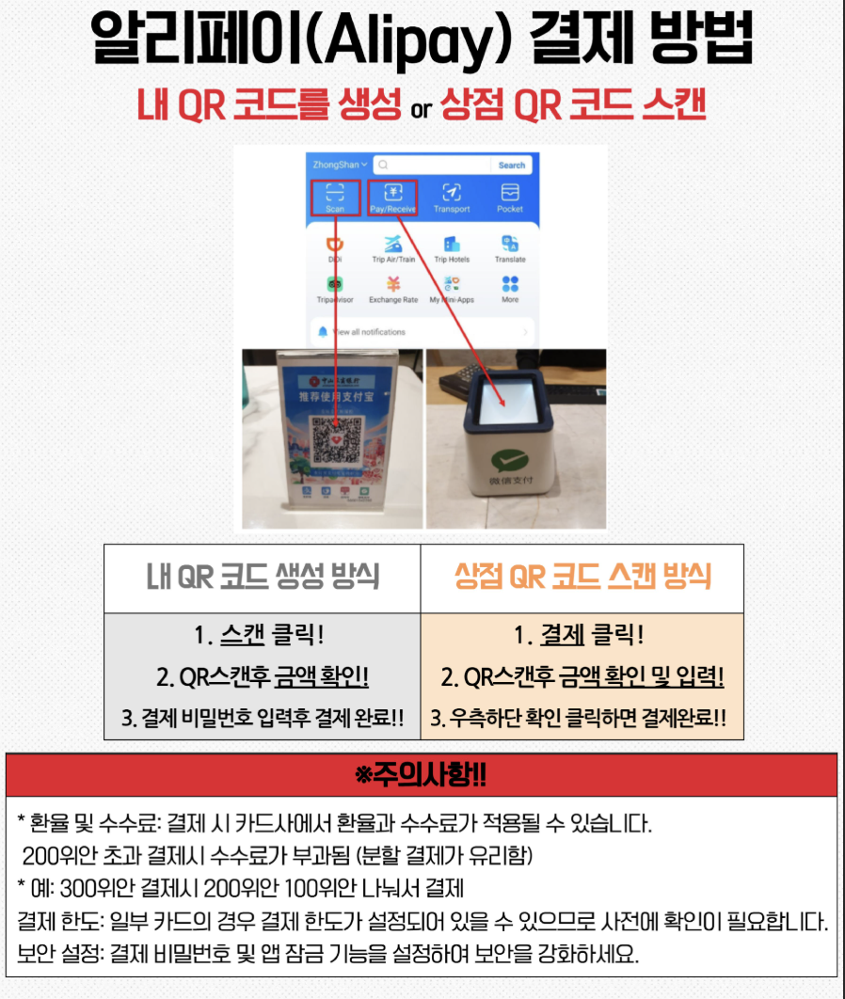
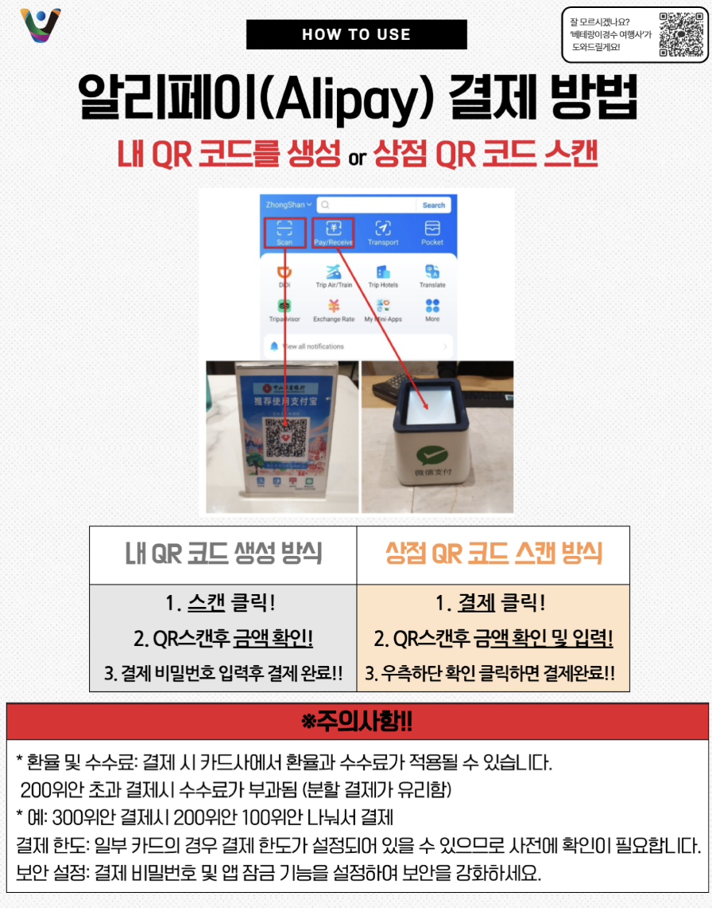

인천공항 오는 방법
부산·대구에서 인천공항으로 이동하는 방법은 크게 두 가지가 있습니다.
출발 시간과 이동 시간을 미리 확인해 여유 있게 도착할 수 있는 교통편을 선택해 주세요.
공항 리무진 버스
출발지에서 인천공항까지 한 번에 이동할 수 있어 편리합니다.
부산동부(노포) · 부산해운대(수도권) · 동대구 버스터미널
도착지
인천공항 제2터미널(T2)
KTX + 공항철도
KTX로 서울역까지 이동한 후, 공항철도로 환승하여 인천공항 제2터미널로 이동합니다.
부산역 / 동대구역 → 서울역
STEP 02 · 공항철도 탑승
서울역 → 인천공항 제2터미널(T2)
공항 리무진 버스 추천 출발지
표시해 둔 추천 출발 시간에 탑승하셔야 여유롭게 도착할 수 있습니다.
- 집합 시간은 오전 9시입니다. 늦지 않도록 이동 시간을 미리 확인하고 교통편을 예매해 주세요.
- 공항철도 및 공항 리무진 버스 예매 시 목적지가 인천공항 제2터미널(T2)인지 반드시 확인해 주세요.
- 교통편 지연이나 예상치 못한 상황에 대비해 여유 있게 도착할 수 있도록 일정을 계획해 주세요.
알리페이 (Alipay)
중국에서는 현금이나 실물카드 사용이 어려운 경우가 많습니다.
식당, 백화점, 택시, 자판기, 길거리 간식까지 QR코드로 결제하는 경우가 많아 모바일 결제 수단을 미리 준비해 두는 것이 좋습니다.
식당, 백화점, 택시, 자판기 심지어 길거리 간식까지도 QR코드 결제를 사용해요.
식당, 백화점, 택시, 자판기, 길거리 간식까지 QR코드로 결제하는 경우가 많아 모바일 결제 수단을 미리 준비해 두는 것이 좋습니다.
사실 네이버페이, 카카오페이 등에서 알리페이 연동하면 쉽고 빠르게 바로 결제할 수 있습니다.
하지만 알리페이 앱이 있으면 사용할 수 있는 기능이 훨씬 많아요.
결제뿐만 아니라 택시 호출, 교통카드, 음식 주문 등 다양한 기능을 이용할 수 있습니다.
가입 및 카드 등록 과정에서 한국 번호 인증이 필요하고 시간이 오래 걸릴 수 있으니 출국 전 미리 설치하고 결제 수단 등록까지 완료해 주세요!
알리페이 카드 등록 방법







카카오페이 알리페이 연동 방법
아래에 카카오페이와 알리페이 연동 과정을 보여주는 사진을 순서대로 넣어 주세요.
환전
중국에서는 알리페이, 위챗페이 등 모바일 결제가 보편적이에요. 그래서 현금 환전이 필수는 아니에요.
컨벤션 기간 동안 호텔, 교통편 및 전 일정 식사가 제공됩니다. 다만, 개인 쇼핑이나 자유 일정에 사용할 경비는 미리 준비해 주세요.
호텔 하우스키핑 팁 등 소액 현금이 필요한 상황에 대비해 현금을 조금 준비해 오시는 것도 좋습니다.
- 알리페이에 연결한 계좌에 필요한 금액을 미리 충전하거나, 연동된 카드의 해외 결제 한도와 사용 가능 여부를 확인해 주세요.
- 알리페이 앱 설치 및 카드 등록을 미리 완료해 주세요.
수하물 규정
기내로 반입할 수 있는 휴대 수하물과 비행기 탑승 전 보내는 위탁 수하물 규정을 꼭 확인해 주세요.
미리 규정을 확인하고 짐을 준비해 주세요. 규정에 맞지 않는 물건은 공항에서 추가 검사가 필요하거나 반입이 제한될 수 있습니다.
휴대 수하물 규정 · 기내 반입
- 허용 개수: 1개
- 종류: 휴대용 캐리어, 배낭, 보스턴백 등
- 크기 제한: 세 변의 합 115cm 이내
- 무게 제한: 10kg 이하
위탁 수하물 규정
- 허용 개수: 1개
- 무게 제한: 23kg 이하
전자제품 (전자담배 포함)
노트북, 아이패드, 보조배터리, 전자담배 등 배터리가 내장된 전자기기는 직접 기내에 소지하고 탑승해야 합니다. 기기별 규정은 항공사 안내도 확인해 주세요.
보조배터리
보조배터리는 위탁 수하물로 보낼 수 없으며, 기내에 직접 소지해야 합니다. 항공사와 출발·도착 국가의 최신 규정을 출발 전에 반드시 확인해 주세요.
- 제품 용량 표시: 제품에 용량이 기재되어 있는지 확인해 주세요.
- 용량: 항공사 규정을 확인해 주세요. 100Wh 이하 제품이라도 개수 및 반입 조건이 별도로 적용될 수 있습니다.
- 허용 개수와 인증 요건은 항공사·노선·현지 규정에 따라 달라질 수 있으므로, 일률적으로 단정하지 말고 탑승 항공사의 최신 안내를 확인해 주세요.
- 기내에서 보조배터리를 사용하거나 충전하는 행위가 제한될 수 있습니다. 기내 안내와 승무원의 지시에 따라 보관해 주세요.
라이터
라이터는 종류와 관계없이 위탁 수하물 반입이 제한될 수 있습니다. 소지 및 기내 반입 가능 여부는 항공사 규정을 확인해 주세요.
액체류
국제선 기내 반입 액체류는 일반적으로 개별 용기 100ml 이하이며, 용기들을 1L 이하의 투명한 지퍼백 1개에 담아야 합니다.
- 개별 용기: 100ml 이하
- 총용량: 1L 이하의 투명 지퍼백 1개
- 포장 방법: 완전히 밀봉할 수 있는 투명 지퍼백에 담기
용기에 내용물이 조금만 남아 있더라도 용기 자체가 100ml를 초과하면 기내 반입이 제한될 수 있습니다.
준비물
샤워기 필터
작년 수돗물 관련 이슈가 있었던 만큼, 위생에 신경 쓰이시는 분들은 샤워기 필터를 챙겨오시는 것을 추천합니다.
전압 및 멀티어댑터
중국 전압은 220V, 50Hz입니다. 한국과 전압은 같지만 주파수가 다르고 콘센트 모양도 다양하므로, 사용하는 기기와 숙소 콘센트에 맞는 멀티어댑터를 준비해 주세요.
음식
컨벤션 기간 동안 전 일정 식사가 제공됩니다. 다만 향신료에 민감하시거나 입맛에 맞지 않는 음식이 걱정되시는 분들은 햇반, 김, 참치 등 간단한 음식을 준비해 오시면 도움이 될 거예요.
음식 알레르기가 있거나 드시지 못하는 음식이 있으신 분들은 사전에 꼭 알려주세요.
육류 및 식물성 식품은 종류에 따라 중국 반입이 제한될 수 있습니다. 라면, 참치, 소고기 고추장 등도 상품에 따라 반입 여부가 달라질 수 있으니, 반입 가능 여부를 미리 확인해 주세요.
수영복
자유 일정 동안 머무를 두 번째 호텔에는 수영장이 있습니다. 물놀이를 즐기고 싶다면 수영복을 챙겨 주세요.
비상약
정기적으로 복용하는 약이 있거나 본인에게 필요한 상비약이 있다면 여행 기간에 맞춰 미리 챙겨와 주세요.
통신 (로밍 / 유심 / VPN)
출국 전 본인이 사용하는 통신사에서 일반 로밍을 미리 신청하는 것을 추천합니다. 이용하려는 앱과 서비스가 중국 현지에서 정상적으로 작동하는지도 통신사 상품 안내를 통해 확인해 주세요.
통신사별 로밍 상품
SKT · KT · LG U+
번역 앱 (Papago)
오프라인에서도 사용할 수 있도록 파파고 앱과 필요한 언어 데이터를 미리 다운로드해 두는 것을 추천합니다.
날씨 & 옷차림
11월 초에는 대체로 쾌적한 가을 날씨가 이어집니다. 한국보다 기온이 높은 편이라 비교적 따뜻하게 느껴질 수 있습니다.
컨벤션장 안은 사람이 많고 실내 온도가 높을 수 있는 반면, 아침저녁으로는 쌀쌀할 수 있습니다. 상황에 맞게 조절할 수 있도록 얇은 옷과 가벼운 겉옷을 함께 준비해 주세요.